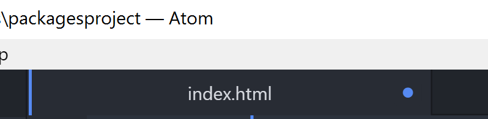
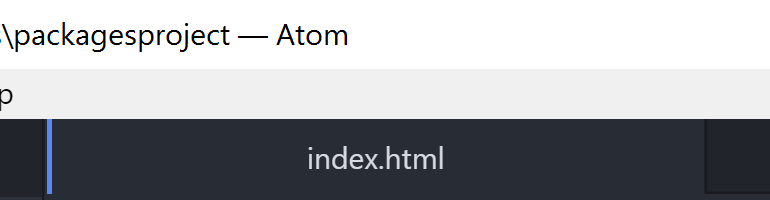
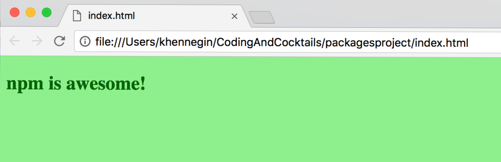

Part 2: Create the project files
All of these steps are performed inside Atom.
Right click on the packagesproject folder in the left sidebar and choose New File
You will be prompted to name the file. Type index.html & hit enter
Enter the following HTML and then save the file (Ctrl+S or Cmd+S):
<!DOCTYPE html> <html> <head> <link rel="stylesheet" type="text/css" href="main.css"> </head> <body> <h2> npm is awesome! </h2> <h4> </h4> <script src="bundle.js"></script> </body> </html>Can you tell what is going on in this HTML? Grab your neighbor and take turns walking through each
<tag>.If this is your first time with us, note the indentation in the code. Indentation is important when structuring your code to make it more readable. Even if this is your first time looking at HTML, you can see the indentation helps your eyes to follow from an
<opening>HTML tag [like<head>] to the</closing>tag [like</head>]. And the children HTML elements are indented between.Need a refresher? Revisit the HTML worksheet from January: bit.ly/CnCJanWork
In Atom, if a file has been modified but not saved, the tab shows a dot. Often, the answer to "Why isn't my code working?" is "Oh, I didn't save the file".
Unsaved:

Saved:

Let's add some styles to our HTML with a bit of color. Repeat steps 1-3 to create a file called main.css
Enter the following CSS and then save the file:
body { background-color: lightgreen; } h1, h2, h3, h4, h5, h6 { color: darkgreen; }Compare this CSS to the HTML above. Can you guess what it will look like in the browser?
Use the CSS worksheet from February, if you need a reminder: bit.ly/CnCFebWork
Repeat steps 1-3 to create a file called index.js (it remains empty)
In Chrome, navigate to your index.html file: file:///<yourHomeDirectory>/CodingAndCocktails/packagesproject/index.html
The Cloud9 workspace is all-inclusive, so the process to view the rendered HTML file is a bit different than looking at a local file in Chrome from your computer.
Right click on the index.html in the left sidebar to open a context menu and select Preview. This adds a new tab within your Cloud9 workspace for previewing the display of your HTML file.
Your rendered HTML file should look like this:
